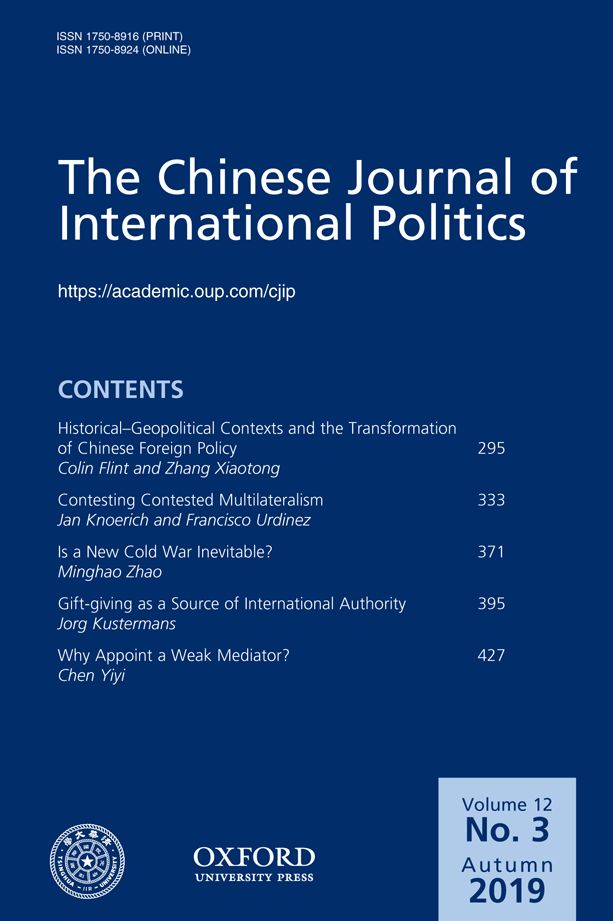
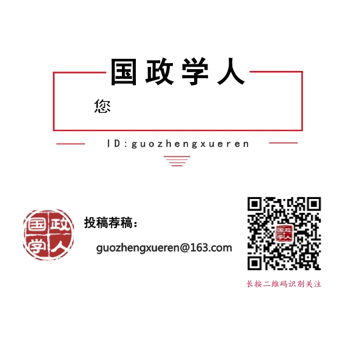

收录于合集 #新刊速递 123个
期刊简介

《中国国际政治杂志》（ The Chinese Journal of International Politics ）成立于2006年，主编是孙学峰，是由牛津大学出版社每季度出版的经同行评议的学术期刊，以现代方法论为基础研究国际关系，也发表历史研究和政策导向的论文。该期刊大部分文章或与中国有关，或对中国的外交政策有影响。
本期参与
【编译】王国欣、李博轩、雒景瑜、袁蕙珈、冯毓婧
【校对】孙通、姚寰宇
【审核】徐琛
【排版】赵怡雯
本期目录
1. 历史地缘政治语境和中国外交政策的转型
Historical–Geopolitical Contexts and the Transformation of Chinese Foreign Policy Colin Flint, Zhang Xiaotong
2. 争取有争议性的多边主义：为何西方国家会成为AIIB创始成员国？ Contesting Contested Multilateralism: Why the West Joined the Rest in Founding the Asian Infrastructure Investment BankJan Knoerich, Francisco Urdinez
3. 新冷战不可避免吗? ——中国对美中战略竞争的思考
Is a New Cold War Inevitable? Chinese Perspectives on US–China Strategic Competition Minghao Zhao
4. 国际权威的来源之一：礼物馈 赠
Gift-giving as a Source of International AuthorityJorg Kustermans ****
5. 为什么要任命弱调解人？减少国际调解不确定性的战略选择
Why Appoint a Weak Mediator? A Strategic Choice to Reduce Uncertainty in International MediationYiyi Chen 摘要译文
1.
历史地缘政治语境和中国外交政策的转型 ********
【题目】 Historical–Geopolitical Contexts and the Transformation of Chinese Foreign Policy
【作者】 ColinFlint: 科林·弗林特，犹他州立大学政治学教授。张晓通：武汉大学政治与公共管理学院教授。
【摘要】 过去几年，中国做出了引人注目的外交政策决定，改变了全球格局和其他国家的行为。要充分了解中国外交政策的机遇和局限性，就需要了解其地缘政治背景。本文的主要论点是，必须对地缘政治背景进行理论化以便理解国家的决定。本文使用地缘政治学的角度分析世界体系，以探究历史和当代中国外交政策的背景。本文基于资本主义世界经济的中心- 边缘等级以及经济和霸权周期论创建了一个时空矩阵。文章对中国外交周期进行了新划分（从1840年到2039年），将中国的外交政策置于时空矩阵下，通过讨论当代地缘政治背景的特征，评估中国当前外交政策——尤其是以“一带一路”倡议为重点的外交政策所面临的机遇和挑战。最后，文章讨论了这对当代中国外交政策的影响。
In the past few years, China has made dramatic foreign policy decisions that
have changed both the global landscape and the behaviour of others states. To
understand fully the possibilities and limitations of China’s foreign policy,
it is important to see its occurrences within geopolitical contexts. The main
argument of this article is that geopolitical context must be theorized in
order to understand the decisions of states. We define a political geography
perspective within a world-systems analysis that creates a Space-Time matrix
of context based on the core-periphery hierarchy of the capitalist world
economy and economic and hegemonic cycles. Inspired by Chinese scholars and
policymakers’ periodisations of Chinese diplomacy, we develop a
newperiodisation of Chinese diplomatic cycles from 1840 to 2039. Using this
new periodisation of Chinese diplomacy, we situate the changing nature of
Chinese foreign policy within our Space-Time matrix. We then evaluate the
possibilities and challenges of China’s current foreign policy, with emphasis
on the Belt and Road Initiative, by illustrating features of the contemporary
geopolitical context. Finally, we discuss the implications of this for
contemporary Chinese foreign policy.
【编译】袁蕙珈 **** 【校对】 姚寰宇
2.
争取有争议性的多边主义： 为何西方国家会成为AIIB创始成员国？
【题目】 Contesting Contested Multilateralism: Why the West Joined the Rest in Founding the Asian Infrastructure Investment Bank
【作者】 Jan Knoerich, Francisco Urdinez
【摘要】
这项研究调查了为什么大量西方发达经济体在2015年加入了中国领导的亚洲基础设施投资银行（亚投行），尽管亚投行在多边发展金融领域挑战了以西方为中心的国际秩序。通过运用包括精英访谈、政府声明和回归分析在内的混合方法检验，借鉴理性选择理论、国际政策扩散和国际机构理性设计等概念，本研究发现，亚投行能够吸纳众多成员国是因为中国在西方发达经济体中创造了有效的组织需求。我们认为，西方国家的决策者在创建组织和决定成员资格的过程中，享受着中国给予他们的“诱导代理”（induced
agency）。首先，西方发达经济体拥有代理权，它们的参与避免了亚投行成为一个仅由亚洲债务国组成的同质小型组织，转而成为一个由债务国和债权国成员组成的异质性全球组织。因此，加入亚投行是为了适应西方发达经济体的具体经济和政治目标。第二，西方发达经济体在决定加入亚投行的过程中，得到了中国积极的争取。此外，中国赞同西方发达经济体之间就加入亚投行问题自发加强沟通。这两项努力最终导致西方国家作出要获得亚投行成员资格的决定。第三，西方发达经济体在确定亚投行组织设计的过程中被赋予了代理权，使它们能够有效地将最初不同的愿景用于银行的机构设计，并将亚投行从竞争现有的多边开发银行系统有效地融入现有体系中。
This study examines why a large number of Western advanced economies joined
the China-led Asian Infrastructure Investment Bank (AIIB) in 2015, despite the
bank’s purported challenge to the Western-centered international order in the
area of multilateral development finance. Through a mixed-method examination
involving elite interviews, analysis of government pronouncements and
regressions, and drawing on concepts from rational choice theory,
international policy diffusion and rational design of international
institutions, this study finds that the AIIB’s success in terms of large
membership is a result ofChina’s effectiveness in creating demand for the
organization among Western advanced economies. We argue that policymakers in
Western countries enjoyed the“induced agency”granted to them by China in the
process of creating the organization and deciding about membership. First,
Western advanced economies had agency, as their involvement was needed to
prevent the AIIB from becoming a homogenous small organization consisting of
Asian debtor countries in favor of a global organization with a heterogeneous
group of debtor and creditor country members. The AIIB was thus set up to
accommodate the specific economic and political goals of Western advanced
economies. Second, Western advanced economies experienced agency in the
process of deciding about membership as they were actively courted by China to
join the AIIB. China further endorsed the spontaneous intensification of
communications about joining the AIIB that ensued among Western advanced
economies. Both efforts ultimately resulted inthe diffusion among them of the
decision in favor of membership. Third, the Western advanced economies were
granted agency in the process of determiningthe AIIB’s organizational design,
allowing them to effectively converge the initially-diverse visions for the
institutional design of the bank from contesting the existing system of
multilateral development banks towards integrating effectively into it. Our
study advances theory on country-specific demand for membership in an
international organization.
【编译】 雒景瑜 ** ****** ** **** ****** 【校对】姚寰宇
3.
新冷战不可避免吗? ——中国对美中战略竞争的思考
【题目】 Is a New Cold War Inevitable? Chinese Perspectives on US–China Strategic Competition ********
【作者】 Minghao Zhao 赵明昊（察哈尔学会高级研究员）
【摘要】 近年来，中国学者和政策精英们已经讨论了中美之间日益激烈的战略竞争及其对中国外交政策的多方面影响。一些人甚至担心美国和中国之间爆发新冷战的可能。本文旨在分析中国对美中战略竞争的看法。在大多数中国学者看来，美中战略竞争是不可避免的，因为中国正在缩小自己与美国之间的综合国力差距，而美国坚决维护自己的全球霸主地位。包括意识形态分歧在内的其它因素可能会助长大国之间的竞争，而这种竞争已扩展到美中关系的多个方面。中国学者认为，中美之间的经济和技术竞争加剧，西太平洋是美中战略竞争的焦点。与此同时，一些中国学者更加重视美中在国际声望和领导地位上的竞争。然而，中国分析人士对美中关系的前景的态度并不过于悲观，并提出了旨在管理美中战略竞争、让两个大国之间恢复新均衡的政策建议。
In recent years, Chinese scholars and policy elites have discussed the ever intensifying strategic competition between the United States and China andits multifaceted implications for Chinese foreign policy. Some even worry about the possibility of a new Cold War between the United States and China. This article aims to offer an analysis of Chinese perspectives on US–China strategic competition. In the view of most Chinese observers, US–China strategic competition is inevitable because China is closing the national power gap between itself and the United States, while the latter resolutely upholds its global primacy. Other factors, including ideological disagreements, may fuel the major power competition that has extended to most aspects of US–Chinarelations. Chinese observers believe that economic and technological rivalry between the United States and China has heightened and that the Western Pacificis the focal point of US–China strategic competition. Meanwhile, certain Chinese scholars attach greater importance to US–China competition over international prestige and leadership. However, Chinese analysts are not overly pessimistic about the prospects for US–China relations and have raised policy recommendations geared to managing US–China strategic competition and restoring a new equilibrium between the two major powers.
【编译】冯毓婧 【审校】姚寰宇
4.
国际权威的来源之一： 礼物馈赠
【题目】 Gift-giving as a Source of International Authority
【作者】 Jorg Kustermans **** ****
【摘要】 本文探讨了古代近东地区（地中海东部沿海地区）和近代东亚早期礼物馈赠的外交实践。在两种历史背景中，礼物互赠都发挥着巩固主导行为体国际权威的作用。传统意义上礼物馈赠与权威的因果关系是通过送礼者慷慨相赠与收礼者心生感激的内在情感互动机制产生的，但外交中的礼物馈赠和国际权威的强化却遵循另一种因果机制。外交性礼物馈赠是一种礼节性的礼物互赠形式，并且作为一种仪式性的实践有助于维持国际权威。通过仪式化的方式，外交上的礼物互赠使得国际权威更加易于接受。仪式化使得主导行为体和附属行为体双方都能接受模糊的权威实践。附属行为体被主导行为体的赠礼所吸引并被其权威所威慑，主导行为体则既为自身的权威感到骄傲又担忧其权威的不稳定。通过界定共同仪式参与者的身份、协调在仪式中的行为、以及界定主导行为体权威的外部来源，外交性礼物馈赠有助于维持国际权威。权威实践的模糊性可能是不可简化的，因此可以预期在任何国际权威的案例中都会有相似的仪式化实践行为。
This article discusses the diplomatic practice of gift-giving in the Ancient Near East and Early Modern East Asia. In both cases, gift-exchange served to consolidate the dominant polity’s international authority. The causal relation between gift-giving and authority is typically rendered in terms of generosity inspiring gratitude, but a different mechanism connects diplomatic gift-giving and the consolidation of international authority. Diplomatic gift-giving is a ceremonial form of gift-exchange and it as a ritual practicehelps maintain international authority. By means of ritualization, diplomatic gift-exchange renders international authority palatable. Ritualization enables both dominant and subordinate actors to come to terms with the ambiguity of the experience of authority. Subordinate actors are at once entranced and frightened by the authority of the dominant actor. The dominant actor feels both pride and insecurity. By defining an identity as participants in a shared ritual, by orchestrating their demeanor during ritual, and by identifying an external source of the dominant actor’s authority, diplomatic gift-giving contributes to the maintenance of international authority. The ambiguity of the experience of authority is probably irreducible. It is therefore to be expected that any case of ‘international authority’ will feature the performance of similar ritualizing practices.
【编译】王国欣 【校对】孙通 【审核】姚寰宇
5. ****
为什么要任命弱调解人？ 减少国际调解不确定性的战略选择 ****
【题目】 Why Appoint a Weak Mediator? A Strategic Choice to Reduce Uncertainty in International Mediation
【作者】 陈一一，兰州大学政治与国际关系学院、中亚研究所副教授, 德国康斯坦茨大学政治科学专业博士。研究方向包括和平与冲突研究、冲突管理与解决等。
【摘要】 现有的有关调解的研究发现，由强势调解员进行调解既更普遍，也更有利于达成和解。但是，为什么有些争端方会选择弱调解人却没有得到解释。从不确定性机制的角度来看，调解是一种共享个人信息并减少争端方可能的继续战争决心的程序。争端方可以围绕控制自己的信息共享或增加对手的信息共享来获得不确定性方面的比较优势，从而从调解中受益。关于这两种战略选择，本文认为，当争端方更倾向于控制自己的信息共享而不是增加对手的信息共享时，他们选择弱调解人的可能性更大。相应地，本研究选取了三个影响争端方获得相对优势战略选择的潜在因素，即争端的先前调解、争端方之间的敌对程度以及争端方之间的权力对比。作者从国际危机行为（ICB，1918–2015）数据集和国际冲突管理（ICM，1945–2003）数据集中汇编数据进行实证分析。结果表明，当争端方首次在争端中进行调解，并且争端的敌对程度很低时，由弱调解人进行调解的可能性更高。在某些情况下，争端方之间的权力悬殊，他们也更可能选择弱调解人进行调解。
Existing research on mediation finds that mediation by a strong mediator is
both more prevalent and more conducive to a negotiated settlement. However,
why disputants select a weak mediator remains unclear. From the perspective of
the uncertainty mechanism, the nature of mediation is a procedure for sharing
private information and reducing disputants’ uncertainty regarding the resolve
to continue fighting. Disputants can benefit from mediation through gaining
acomparative advantage regarding uncertainty by focusing on either controlling
the sharing of their own information or increasing their opponents’ sharing of
information. With regard to these two strategic choices, this article argues
that the selection of a weak mediator is more likely when disputants prefer
controlling the sharing of their information to expanding their opponents’
information sharing. Correspondingly, three potential factors that influence
the disputants’ strategic choice of gaining a comparative advantage regarding
uncertainty are applied, namely, a previous mediation in the dispute; the
dispute’s level of hostility; and the power disparity between the disputants.
The author compiles data from the International Crisis Behaviour
(ICB,1918–2015) data set and the International Conflict Management (ICM,
1945–2003) data set for the empirical analysis. The results show that
mediation by a weak mediator is more likely when it is the first time that the
disputants haves ubmitted to mediation in the dispute and when the dispute’s
level of hostility is low. In some cases, a large power disparity between the
disputants also makes the selection of a weak mediator more likely.
【编译】李博轩 【审校】姚寰宇
扫下方二维码查看往期精彩
分类导览 1

分类导览 2
【新刊速递】第01期 | Review of International Studies Vol.45, No.4, 2019
【新刊速递】第02期 | International Relations Vol.33, No.3, 2019
【新刊速递】第03期 | International Organization Vol.73, No.3, 2019
【新刊速递】第04期 | World Politics, Vol.71, No.4, 2019
【新刊速递】第05期 | European Journal of International Relations
【新刊速递】第06期 | Security Studies, Vol.28, No.4, 2019
【新刊速递】第07期|International Security, Vol 44, No. 2, 2019
【新刊速递】第08期| Cambridge Review of International Affairs,Vol.32,No.4
【新刊速递】第09期| International Relations of Asia-Pacific Vol.19,No.3
【新刊速递】第10期 | International Studies Review, Volume.21, No.3, 2019
【新刊速递】第11期|Cooperation and Conflict, Vol. 54, No. 4, 2019
【新刊速递】第12期 | International Affairs, Vol.95, No.6，2019
【新刊速递】第13期|Chinese Journal of International Politics, No.4, 2019

国政学人
支持学术公益与知识传播
微信扫一扫赞赏作者 __赞赏
已喜欢，对作者说句悄悄话
取消 __
发送给作者
发送
最多40字，当前共字
上一页 1/3 下一页
长按二维码向我转账
支持学术公益与知识传播
受苹果公司新规定影响，微信 iOS 版的赞赏功能被关闭，可通过二维码转账支持公众号。